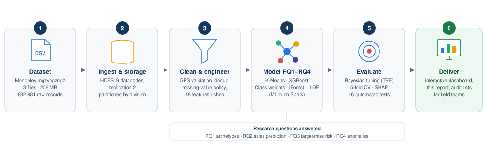
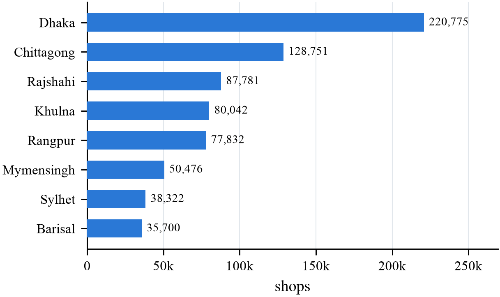
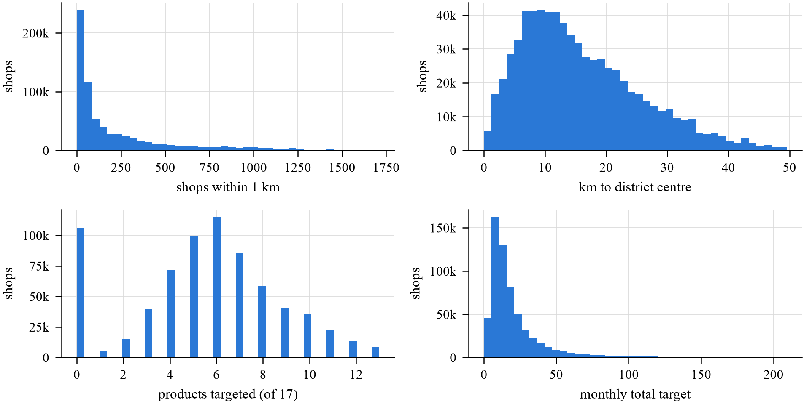
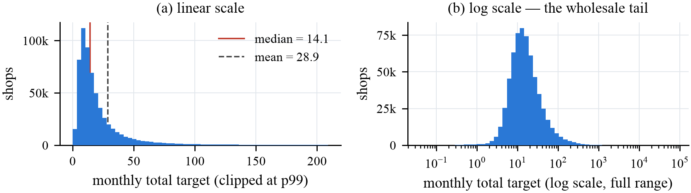
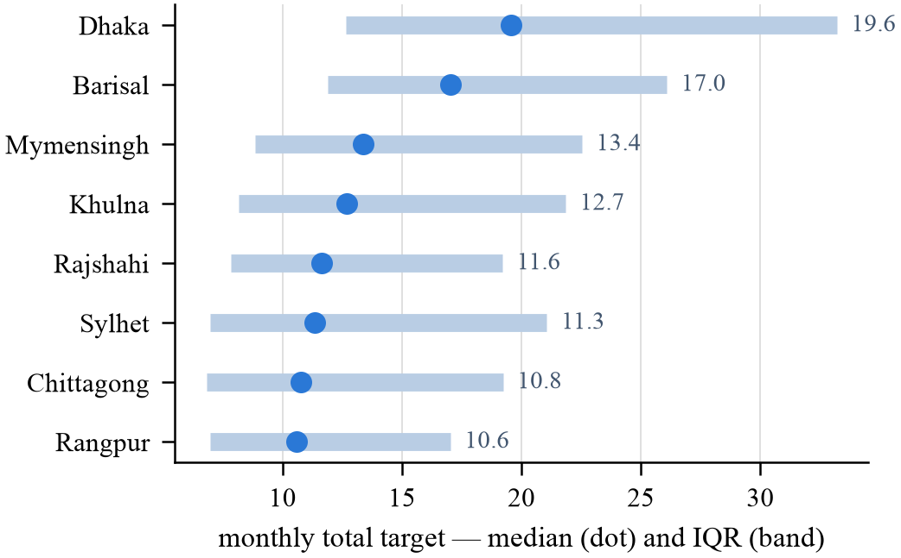
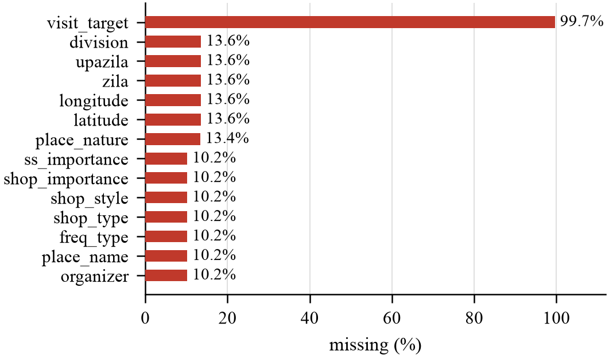
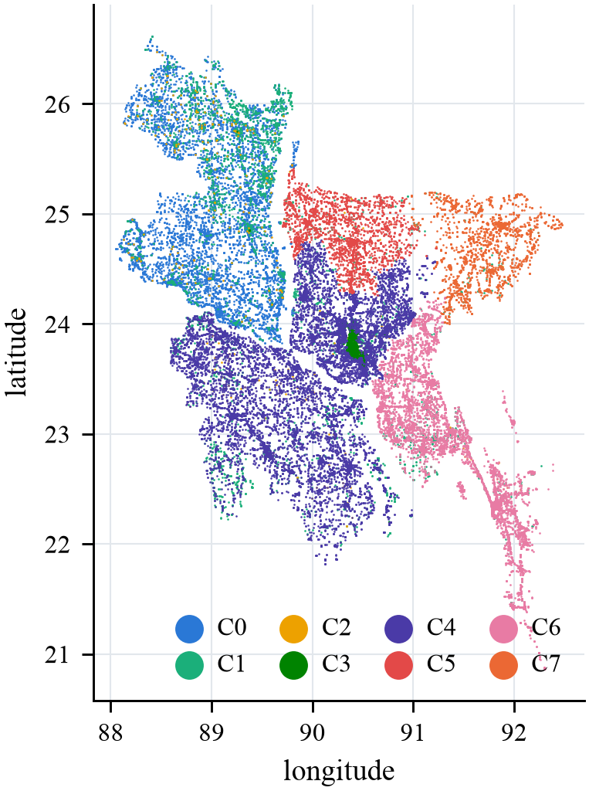
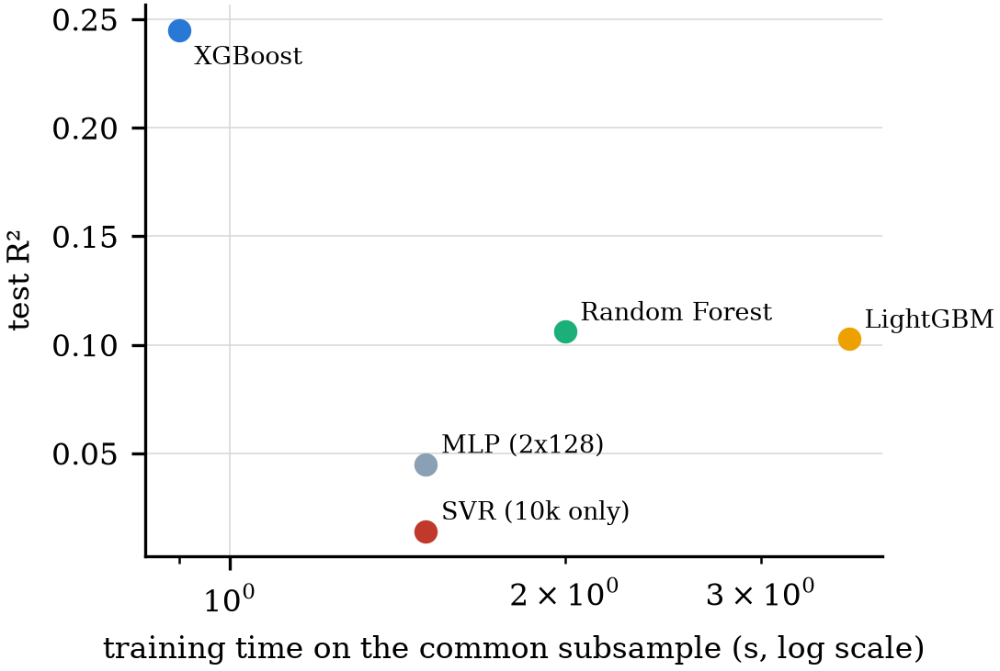
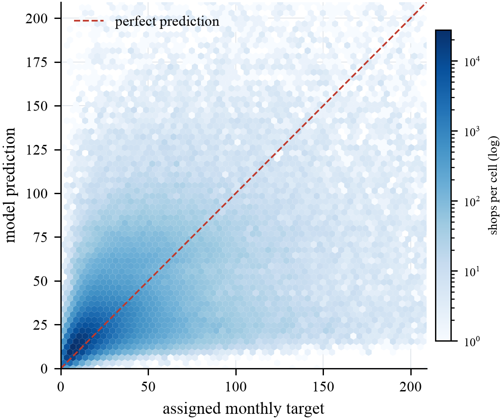
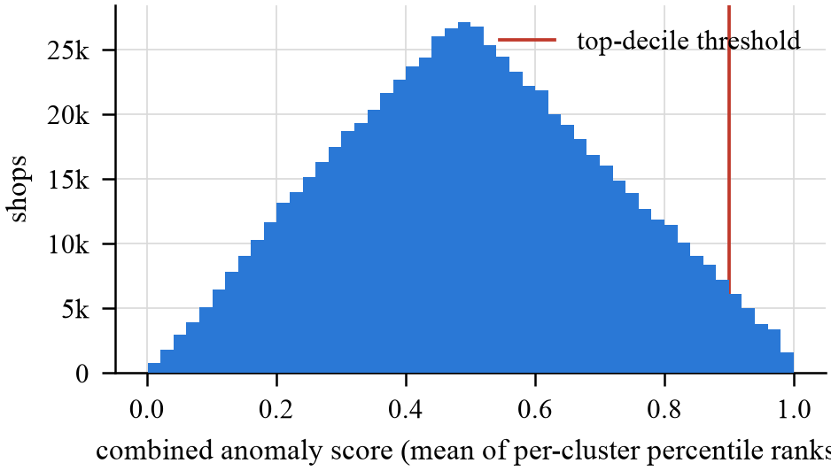

Abstract—Bangladesh’s fast-moving consumer goods (FMCG) trade reaches consumers through roughly 720,000 retail outlets spread over all 64 districts, but allocation planning is still done mostly on intuition; industry estimates put the resulting waste at 15–25% of distribution capacity. In this project we run supervised, unsupervised, and clustering methods together on the recently released Comprehensive Retail Network Dataset of Bangladesh (719,817 GPS-tagged outlets, a 42-SKU catalogue, and monthly sales targets for 17 products). We prepare the data in two lanes that check each other: a scikit-learn reference lane, and a distributed lane on Hadoop HDFS and Apache Spark with a division-partitioned warehouse whose row counts reproduce the reference exactly. From each shop we build 48 spatial and structural features. We find 8 interpretable shop archetypes with K-Means and confirm them with hierarchical clustering and DBSCAN. We compare four regression models for sales-target prediction (best test R² 0.45 against a linear baseline of 0.02). We train a target-miss risk classifier that reaches ROC-AUC 0.869 on the held-out split and 0.870 out-of-fold. Finally, we rank 71,982 anomalous shops for fraud and data-error triage with per-cluster Isolation Forest and Local Outlier Factor. Hyperparameters of the winning models come from Bayesian optimization (Optuna TPE), and we also evaluate every algorithm under 5-fold cross-validation. One result has direct business value on its own: 85,167 book entries with no recorded attributes fall into a single “ghost-shop” archetype, which gives distributors a machine-generated audit list for the duplicate and fraudulent entries that motivated this study in the first place.
Index Terms—retail analytics, clustering, XGBoost, SHAP, SMOTE, anomaly detection, Bayesian optimization, Hadoop, Apache Spark, Bangladesh
1. Introduction
Fast-moving consumer goods reach Bangladeshi consumers through one of the densest retail networks in the world: small mudi shops, kiosks, and wholesalers spread across 8 administrative divisions, 64 districts (zila), and 515 sub-districts (upazila). Anyone who has walked through a Dhaka neighbourhood knows how closely these shops sit together. Distributors such as Unilever Bangladesh, ACI, Square Consumer, and Pran-RFL have to decide, shop by shop and month by month, how much product to send and how often a field representative should visit. In practice these decisions still rest mostly on intuition and old habit. The industry knows the consequences well. Urban shops get over-stocked while rural shops run out, target shortfalls surface only at quarter-end when the quarter is already lost, and nobody really knows what share of the outlets in a distributor’s books are duplicates, ghost shops, or plain fraudulent entries.
Until recently nobody could study this problem quantitatively at national scale, simply because no public data described the network. The release of the Comprehensive Retail Network Dataset for Bangladesh [1] changed that. It gives GPS coordinates, structural attributes, and monthly sales targets for hundreds of thousands of outlets under a CC BY 4.0 license. As far as we can tell the dataset has hardly been touched yet, and our project is among the first attempts to run a full machine-learning pipeline on it.
We ask four research questions. RQ1: what natural archetypes exist among the outlets? RQ2: can we predict a shop’s monthly sales target from its location, type, importance, and neighbourhood density? RQ3: can we flag in advance the shops that will miss their targets? RQ4: which shops behave oddly compared with their peers? We answer them, in order, with clustering (K-Means, hierarchical, DBSCAN), regression (a linear baseline against Random Forest, XGBoost, and LightGBM, explained with SHAP), classification (logistic regression, Random Forest, and XGBoost with SMOTE class balancing), and per-cluster anomaly detection (Isolation Forest and Local Outlier Factor). We pick the hyperparameters of the winning models with Bayesian optimization, evaluate every algorithm again under 5-fold cross-validation, and package the whole pipeline so that one Docker command reproduces it. Since this course is about big data analytics, data storage and preparation also run on distributed infrastructure, namely a Hadoop HDFS cluster and Apache Spark with MLlib, and the two execution lanes cross-check each other.
Fig. 1 shows the full workflow of the project in six steps: from getting the dataset, through distributed storage, cleaning and feature engineering, the four modelling phases, and evaluation with Bayesian tuning and cross-validation, to the delivered dashboard, report, and audit lists.

Fig. 1. Overall methodology of the project: six steps from dataset acquisition to delivery. Step 4 answers the four research questions; steps 2–4 additionally run on the distributed Hadoop/Spark lane (Fig. 2).
The rest of this report is organised as follows. Section 2 reviews the literature on the methods we use. Section 3 describes the data: the files, how we turn them into model-ready features, an exploratory analysis, how we treat missing values, and the distributed preparation on HDFS and Spark. Section 4 presents the methodology and results one research question at a time, then the distributed execution results, and finally a summary comparison of all algorithms under cross-validation. Section 5 closes with numbered findings, recommended actions, limitations, and future work. Two appendices list the files that accompany this report and give reproduction instructions with key source-code excerpts.
2. Review of Literature
The methods we use in this project are all standard tools of data mining, so we review them here together with how they have been applied to retail and distribution problems. Segmenting outlets with clustering is one of the oldest ideas in commercial analytics; in our context an outlet can be anything from a small mudi shop to a departmental store, so segmentation matters. The K-Means algorithm goes back to Lloyd [2]. When there is no ground truth, the silhouette coefficient [3] and the Davies–Bouldin index [4] are still the standard internal criteria for deciding how many clusters to keep. Hierarchical agglomerative clustering with Ward’s linkage gives a second view of the same structure under different assumptions. DBSCAN [5] does not fix the number of clusters beforehand, and it does not force every point into a cluster either. For these reasons we run both of them as structural cross-checks rather than as our primary methods.
For prediction on tabular data, ensembles of decision trees dominate the field. Random Forests [6] cut variance by bagging many decorrelated trees. Gradient-boosted trees instead fit trees one after another on the residuals left by earlier trees; XGBoost [7] and LightGBM [8] are the two implementations everyone uses, and they keep winning applied competitions on structured data. The usual complaint against boosted ensembles is that they are hard to interpret. SHAP [9] answers this by breaking each individual prediction into additive per-feature contributions with game-theoretic guarantees, and we use its Tree-SHAP variant. For class imbalance in classification we use SMOTE [10], which creates synthetic minority-class examples by interpolating between neighbouring minority points. We were careful to apply it only inside training folds, as standard practice requires, since applying it before the split leaks information. For anomaly detection we pair Isolation Forest [11], which isolates anomalies through random axis-parallel splits and scores each point by its average isolation depth, with the Local Outlier Factor [12], which compares the local density of a point against its neighbours. The two methods catch different shapes of failure, and asking for agreement between them cut down our false alarms noticeably. For hyperparameter search we use the Tree-structured Parzen Estimator, a Bayesian optimization method that models the objective as a distribution and proposes promising configurations one at a time; we use the Optuna implementation [13]. Our reference implementations come from scikit-learn [14] and its imbalanced-learn extension.
On the infrastructure side, the Hadoop Distributed File System [15] gives replicated block storage across data nodes, and Apache Spark [16] has become the de-facto engine for distributed data processing, with MLlib [17] as its machine-learning library. We follow the pattern common in industry: the distributed engines handle storage and data preparation, and one strong node trains the models whose exact algorithms MLlib does not provide. The dataset itself is documented in [1], which reports a 13.58% missing-GPS rate; our own profiling reproduced this figure exactly, which gave us some confidence in the source. As far as we could find, no published work has combined clustering, regression, classification, and anomaly detection on this dataset in a single pipeline. That gap is what this project tries to fill.
3. Data
For this project we work with the publicly available dataset titled “Comprehensive Retail Network Dataset of Bangladesh” from Mendeley Data [1] (dataset DOI 10.17632/mgzvngzng2.1, article DOI 10.1016/j.dib.2025.112326, CC BY 4.0). The data was collected between February 2022 and October 2024, and we downloaded it on 5 July 2026. Every statistic in this section comes from our own profiling code run on the actual files; nothing is copied from the dataset paper. Fig. 2 shows where the data sits in our overall architecture. Each record passes through two independent preparation lanes: the scikit-learn reference lane and the distributed Hadoop/Spark lane described in Section 3.5. The outputs of the two lanes cross-validate each other.

Fig. 2. Pipeline architecture. The same raw data flows through a scikit-learn reference lane (the exact proposal algorithms) and a distributed Hadoop HDFS + Apache Spark lane; matching row counts across the two lanes cross-validate the preparation.
3.1 Data Description
The dataset consists of three interlinked comma-separated files. Table 1 summarises them, and Tables 2–4 document every column. Three properties of the data gave us real trouble and needed care. First, the shop identifier shop_code mixes purely numeric strings with hexadecimal-like strings. If a file slice happens to hold only numeric codes, a naive loader infers an integer type, and from then on every join fails silently. This one cost us an afternoon before we caught it, so our loader now pins the identifier to a string type. Second, the two large files are stored in different orders, so sampling both by row position gives zero join overlap; any subsample has to be joined by key. Third, 20,849 shop codes (2.4%) appear more than once in the targets file, sometimes once with values and once entirely empty. We de-duplicate and keep the valued record.
TABLE 1
The Three Files of the Dataset
| File | Rows | Content |
|---|---|---|
shop_info_with_geo.csv | 832,881 | One record per shop registration: GPS coordinates, business type (12 categories), style (3), company importance tier (3), place nature, administrative location (division / zila / upazila), and operational fields. |
product_target_for_shop.csv | 853,732 | Monthly sales target for 17 products per shop (prod_1 … prod_17) and their monthly Total. |
product_info.csv | 42 | SKU catalogue: 42 variants over 24 base products, 5 brands, 9 flavour/variant types, with shop-style and importance-tier price columns, packaging, and volumes. |
Knowing how this data came to exist helps in reading every later result. The records were collected between February 2022 and October 2024 through the field operation of an FMCG distribution network: 62 field organizers registered outlets during their routine visits, noting each shop’s GPS position, business type, appearance style, and commercial importance tier [1]. Anyone who has walked through a bazar here can picture the setting; a large share of these outlets are the small mudi shops found in every neighbourhood. The dataset is therefore an operational artefact, not a designed statistical sample. Its gaps and duplications are the fingerprints of a real field process, and that is exactly what makes it suitable for studying data-quality problems such as ghost shops. The authors anonymised all identifying information: products, brands, types, organizers, and place categories appear as coded labels (shpt_6, brand_1, …), and no personal data is present, so the CC BY 4.0 license allows unrestricted analysis.
The monthly sales targets need careful interpretation, and here we depend on the dataset documentation [1]: the per-product targets were produced by an ensemble-based generation model run by the distributor, who validated them by manually checking a 5% sample against the original survey forms. Two consequences follow for our study. The targets are internally consistent and plausible. They carry the distributor’s real allocation logic, which is precisely the “intuition” this project sets out to model and audit. At the same time they are assigned quantities rather than realised sales, which limits what any supervised model trained on them can claim; Section 4.8 discusses this limitation formally. In scale, the dataset covers every administrative division of Bangladesh, all 64 districts, and 515 of the country’s upazilas. As far as we know, that makes it the first public, national-scale, shop-level description of an FMCG distribution network in a developing economy.
Tables 2–4 give the complete column dictionaries of the three files, profiled from the actual data. Reading them together shows how the network was surveyed. The shop file (Table 2) mixes near-complete operational fields with the two systematic gaps we analyse in Section 3.4. The targets file (Table 3) is a wide fact table whose 17 product columns encode each shop’s assigned assortment. The catalogue (Table 4) exposes the commercial structure: two price systems coexist, one keyed to the shop’s style (price_a/b/c) and one to its importance tier (price_1/2/3). A shop’s classification therefore directly decides the prices it is offered, which is why the importance tier later turns up as a top predictor of sales targets (Section 4.3). All names are anonymised by the dataset authors; no personally identifying information is present.
TABLE 2
Variables of shop_info_with_geo.csv (832,881 Rows)
| Variable | Type | Missing | Distinct | Definition |
|---|---|---|---|---|
| shop_code | string | 0% | 832,881 | Unique shop identifier (join key) |
| organizer | categorical | 10.23% | 62 | Field organizer who registered the shop |
| place_nature | categorical | 13.39% | 10 | Nature of the location (market, roadside, …) |
| place_name | text | 10.23% | 86,217 | Free-text location name (not used as a feature) |
| freq_type | categorical | 10.23% | 1,277 | Visit-frequency classification |
| shop_type | categorical | 10.23% | 12 | Business type |
| shop_style | categorical | 10.23% | 3 | Appearance-based class |
| shop_importance | categorical | 10.23% | 3 | Company importance tier |
| ss_importance | categorical | 10.23% | 7 | Detailed importance rating |
| visit_target | numeric | 99.69% | 27 | Planned monthly visits (dropped) |
| latitude / longitude | numeric | 13.58% | — | GPS coordinates |
| geometry | WKT | 0% | 703,324 | POINT (lon lat); POINT EMPTY when GPS absent |
| zila / upazila / division | categorical | 13.59% | 64 / 515 / 8 | Administrative location |
TABLE 3
Variables of product_target_for_shop.csv (853,732 Rows)
| Variable | Type | Definition |
|---|---|---|
| shop_code | string | Shop reference key; 2.4% duplicated, valued rows kept |
| prod_1 … prod_17 | numeric | Monthly sales target for each product; NaN treated as zero when counting a shop’s product mix |
| Total | numeric | Monthly total target; 118,656 rows carry no value — such shops are excluded from the supervised phases, never imputed |
TABLE 4
Variables of product_info.csv (42 Rows)
| Variable | Definition |
|---|---|
| sku_id, sku_name | Unique SKU variant (anonymised) |
| product_id, product_name | Base product (24 distinct) |
| brand, type | Brand (5) and flavour/variant category (9), anonymised |
| packet_size, in_packet, total_volume | Packaging and volume characteristics |
| price_a/b/c, price_1/2/3 | Shop-style and importance-tier price columns; tier prices missing for SKUs not sold in that tier |
| freq, total_price | Monthly sales frequency target; total price (sell income) |
3.2 Data Transformation and Feature Engineering
Table 5 summarises how we get from the raw file to the model-ready table; Fig. 3 shows the same funnel. All 832,881 raw records carry a unique shop code, so the deduplication step removes nothing. GPS validation (Section 3.4) drops 113,064 rows and leaves 719,817 shops. This is exactly the outlet count published with the dataset, which reassured us that our bounding box was correct. Joining the de-duplicated targets file attaches a monthly target to 613,660 shops (85.3% of the clean set). Where the join meets duplicate keys, we prefer valued rows over empty ones.
TABLE 5
The Preprocessing Funnel
| Stage | Shops | Rule |
|---|---|---|
| 1. Raw shop records | 832,881 | — |
| 2. Unique shop codes | 832,881 | drop duplicated shop_code (none present) |
| 3. Valid GPS inside Bangladesh | 719,817 | coordinates present and within 20.5–26.7°N, 88.0–92.7°E |
| 4. Joined with a sales target | 613,660 | key join on shop_code, valued rows preferred |

Fig. 3. The preprocessing funnel from raw records to model-ready shops.
From the cleaned records we build 48 model features per shop, listed by group in Table 6. The spatial features are our attempt to turn the over-stock/stock-out idea from the proposal into actual numbers. We compute neighbourhood density with a BallTree under the haversine metric. The tree answers all 719,817 radius queries in seconds, since it runs in O(n log n) rather than the O(n²) of a pairwise scan; our first naive attempt at a pairwise version simply did not finish, which is what pushed us to the tree. Centrality is the great-circle distance to the shop centroid of the district. We one-hot encode the low-cardinality categoricals, so an attribute with n levels becomes n indicator columns, and we keep Unknown as an explicit level instead of dropping it (Section 3.4 explains why). The monthly target Total serves only as the supervised label. It never enters the model as an input.
TABLE 6
Engineered Features (48 Columns)
| Group | Features | Computation |
|---|---|---|
| Neighbourhood density | density_500m, density_1km, density_5km |
BallTree (haversine) neighbour counts within each radius, shop itself excluded |
| Centrality | dist_to_district_centre_km |
great-circle distance to the district’s shop centroid |
| Product mix | n_products_targeted |
number of the 17 products with a positive target |
| Position | latitude, longitude | validated GPS |
| Structure (one-hot) | type (12), style (3), importance (3), place nature, division | indicator per level; Unknown kept explicit |
3.3 Exploratory Data Analysis
Fig. 4 shows where the clean outlets sit by division. Dhaka dominates with 220,775 shops, which is what anyone familiar with the city's density would expect, and Chittagong follows with 128,751. Barisal is the smallest division at 35,700, and a further 138 clean shops carry no recorded division. Fig. 5 breaks the outlets down by business type. The network is dominated by the general-retail category shpt_6 (327,346 shops), with shpt_5 next, but the second-largest label overall is Unknown (85,167 shops) — the joint-missingness population we examine in Section 3.4.

Fig. 4. Clean outlets per division (719,817 shops).

Fig. 5. Shops per business type (top 12 labels). The second-largest label is the explicit Unknown level.
Fig. 6 shows the distributions of the four principal engineered features. Neighbourhood density is heavily right-skewed. Most shops have fewer than one hundred neighbours within a kilometre, while the metro-Dhaka core reaches thousands. Distance to the district centre peaks around 10–20 km. The product-mix count concentrates at 5–7 products, with a visible spike at zero that the data-poor segment creates. Fig. 7 shows the monthly total target among the 613,660 joined shops, and it is extremely right-tailed: the median is 14.1 but the mean is 28.9, and the raw file reaches 91,283. In other words, a small population of wholesale-style outlets carries targets three orders of magnitude above the typical shop. This skew follows us through Section 4. It is why squared-error regression metrics jump around across resampling folds, and why anomaly detection has to compare shops only with their own kind.
Two more structures in Fig. 6 deserve comment, because they anticipate later findings. The product-mix distribution (panel c) is bimodal. There is a large mode at 5–7 products, the standard assortment a field representative assigns, and an isolated spike at exactly zero. That spike is not a natural tail; it is the 85,167-shop joint-missingness population, and we can say so with some confidence because a genuine behavioural variable would decay smoothly towards zero. The density distribution (panel a) spans three orders of magnitude, from single-digit neighbour counts in rural upazilas to more than a thousand inside the Dhaka metropolitan core — anyone who has walked past the back-to-back mudi shops of Old Dhaka will find that figure believable. This spread is the raw material from which the clustering of Section 4.2 recovers an urban–rural taxonomy without ever being told what “urban” means.

Fig. 6. Distributions of the principal engineered features, clipped at the 99th percentile: (a) neighbour density within 1 km; (b) distance to the district centre; (c) product-mix breadth; (d) the monthly total target.

Fig. 7. Distribution of the monthly total target among joined shops: (a) linear scale clipped at the 99th percentile; (b) full range on a log scale, exposing the wholesale tail that reaches 91,283.
Fig. 8 completes the exploratory picture with the geography of the targets themselves. Median monthly targets turn out to be surprisingly uniform across divisions (10–17). Dhaka’s wider inter-quartile range reflects its mix of metro key accounts and ordinary shops. Taken together, this tells us that division alone is a weak predictor and shop-level features are needed, which Section 4.3 confirms.

Fig. 8. Monthly total target by division: median (dot) and inter-quartile range (band) among joined shops.
3.4 Data Cleaning and Handling Missing Values
Fig. 9 profiles the missing values in every raw column. Two patterns caught our attention. First, 113,064 rows (13.58%) carry no GPS at all. Their latitude and longitude cells are empty and the geometry field is literally POINT EMPTY, so the coordinates were simply never captured during the survey; this matches the missing rate the dataset authors themselves report [1]. We dropped these rows instead of imputing them, because an invented location would corrupt every spatial feature we build later. Two checks reassured us here: the remaining count equals the published outlet count exactly, and zero non-null coordinates fall outside the national bounding box. Second, the categorical attributes go missing together. Exactly 85,167 records (10.23%) lack the business type, and the very same records also lack style, importance, and organizer. We kept these shops under an explicit Unknown level, and this turned out to be the right call. Section 4.2 shows the clustering isolates exactly this population as its own archetype, so the missingness itself becomes the ghost-shop audit list that motivated the project in the first place. The nearly empty visit_target column (99.69% missing) was dropped.

Fig. 9. Missing values per raw column of the shop file. The 10.23% block is the jointly missing attribute group; 13.58% of rows have no GPS at all.
Refilling missing categoricals from spatial neighbours is the obvious suggestion, and it was our first instinct too, so we tested it instead of dismissing it. For shops whose attributes are known, we hid the true value and predicted it from the majority vote of the 10 nearest neighbours (haversine distance). Table 7 compares the outcome with a majority-class baseline. The location-determined fields are almost perfectly recoverable, and shop_style does carry real spatial signal. But shop_type would be wrong for one shop in three, which makes sense once you picture a bazar lane where a mudi shop, a pharmacy, and a tea stall sit side by side. What surprised us more is that shop_importance imputation is worse than blind majority guessing. So we impute only the geographic fields. Style can optionally be imputed at a ≥70% neighbour-agreement threshold, behind an explicit flag with per-row indicator columns. The business attributes are never imputed.
TABLE 7
10-Nearest-Neighbour Imputation Accuracy on Held-Out Known Shops
| Attribute | 10-NN majority accuracy | Majority-class baseline | Decision |
|---|---|---|---|
| zila (district) | 99.8% | 11.3% | impute |
| shop_style | 96.5% | 65.2% | impute only at ≥70% agreement (flagged) |
| shop_type | 62.5% | 51.6% | never — kept as Unknown |
| shop_importance | 86.9% | 87.9% | never — below baseline |
To see what imputation would actually change downstream, we ran the full pipeline once with imputation switched on (Table 8). The supervised metrics improve; risk ROC-AUC rises from 0.857 to 0.881. But the archetype taxonomy collapses from 8 clusters to 3, because filling in shop_style blends the ghost-shop segment into the ordinary archetypes and hides exactly the population the audit use-case needs to see. The risk numbers are also not strictly comparable between the two runs, since the proxy label is defined relative to cluster peers and the clusters changed. Our reference pipeline therefore keeps imputation off. The flag stays available for deployments that only care about prediction.
TABLE 8
Full-Pipeline Sensitivity of Enabling k-NN Imputation
| Metric | Reference (no imputation) | With k-NN imputation |
|---|---|---|
| Clustering best k | 8 | 3 |
| Silhouette | 0.187 | 0.236 |
| Regression R² (XGBoost) | 0.452 | 0.463 |
| Risk ROC-AUC (XGBoost) | 0.857 | 0.881 |
3.5 Distributed Data Preparation on HDFS and Spark
Since this is a big data analytics course, we made sure the whole data-preparation stage also runs distributed. This lane is not a token gesture; it is the storage and preprocessing backbone of Fig. 2. The storage layer is a Hadoop HDFS cluster [15] running in Docker, with one namenode and nine datanodes, one per data partition: the eight divisions plus the Unknown bucket. We ingest the three raw CSVs into hdfs://<namenode>/smart_retail/raw through the Hadoop FileSystem API at replication factor 2, so losing any single datanode loses no blocks. One operational lesson cost us an evening: the emulated Hadoop command-line client kept aborting partway through the 200 MB transfer, so the ingest job now runs on the native Spark image, which bundles the Hadoop client libraries.
On top of HDFS, an Apache Spark standalone cluster [16] re-executes every cleaning rule of Sections 3.2–3.4 as distributed Spark SQL. De-duplication of shop codes, GPS validation against the national bounding box, and the explicit Unknown level for categorical gaps all carry over directly. The valued-row-preferred de-duplication of the targets file becomes a window function over shop_code. For neighbourhood density we had to settle for a grid-window approximation (cell edge equal to the radius, counts summed over the 3×3 neighbourhood), because an exact BallTree does not distribute. The cleaned data is then rewritten as a Hive-style warehouse partitioned by division — hdfs://<namenode>/smart_retail/warehouse/shops/division=Khulna/… — which gives us partition pruning: a job scoped to selected divisions never reads the other divisions’ files, and Spark’s physical plans confirm it with PartitionFilters: [division = Khulna]. The distributed preparation reproduces the reference funnel of Table 5 exactly: 832,881 → 719,817 → 613,660. We regard this as a strong correctness check. Two independent implementations of every cleaning rule, on two different engines, agree to the row. Section 4.6 reports the corresponding execution results.
4. Methodologies and Experimental Results
4.1 Experimental Setup
We fixed the random seed to 42 everywhere, end to end. Supervised models are scored on a held-out 20% test split, and on top of that we re-run every algorithm under 5-fold cross-validation (Section 4.7), taking care to fit resampling and scaling inside the training folds only. All of our code is Python 3.11 and runs inside Docker containers. The reference lane runs the exact algorithms from our proposal using scikit-learn [14], XGBoost [7], LightGBM [8], imbalanced-learn, SHAP [9], and Optuna [13]; the distributed lane uses Spark MLlib [17]. Appendices A and B give the full source layout and the commands to reproduce everything; the whole five-phase reference pipeline finishes in roughly six minutes on a single machine.
Choosing an algorithm is itself a methodological decision, so before going model by model we summarise our reasoning in one place. Table 9 lists, for each research question, the model we picked, the main alternatives we thought about, and the property of this particular dataset that settled the choice. The subsections after it explain each decision in detail.
TABLE 9
Algorithm Selection Rationale per Research Question
| RQ / task | Chosen | Alternatives considered | Deciding dataset property |
|---|---|---|---|
| RQ1 clustering | K-Means (+ Ward, DBSCAN as checks) | Gaussian mixtures, spectral clustering | 719,817 × 48 matrix: only linear-time methods are feasible; centroids read directly as archetype profiles |
| RQ2 regression | Gradient-boosted trees (XGBoost / LightGBM) | SVR, k-NN regression, neural networks | Mixed one-hot + count features with strong interactions; boosted trees dominate medium-size tabular data and need no feature scaling |
| RQ3 imbalance | SMOTE inside training folds | Class weighting, random undersampling | Moderate 37/63 imbalance in a dense standardized space where interpolation is meaningful; weighting used in the Spark lane as the distributed equivalent |
| RQ4 anomalies | Isolation Forest + LOF, per cluster | One-class SVM, autoencoders, parametric z-scores | No labels; heavy non-Gaussian tails rule out parametric scores; kernel methods do not scale to 719,817 points |
4.2 Unsupervised Learning: Shop Archetypes (RQ1)
How the algorithm works. K-Means keeps one centroid per cluster and alternates two steps until the assignments stop changing: it assigns each shop to its nearest centroid, then moves each centroid to the mean of the shops assigned to it. Every iteration is guaranteed to lower the within-cluster sum of squared distances. Each iteration also costs time linear in the number of shops, clusters, and features, and that linearity is the reason the method stays practical at 719,817 × 48. The algorithm has two well-known weaknesses. It is sensitive to where the centroids start, which we handle with ten independent restarts per k, and it cannot pick k on its own, which we handle with two independent internal criteria described below.
Why this model and not another. Each of the natural alternatives breaks on some property of this dataset. Gaussian mixture models would give us soft memberships, but fitting a full 48-dimensional covariance matrix per component is statistically fragile when the features are mostly one-hot, and it is an order of magnitude slower. Spectral clustering needs an affinity structure over every pair of shops, which is quadratic in 719,817, so it is simply out of reach. Density-based clustering does not need a k at all, which is exactly why we run DBSCAN as a check; its result below shows the network has no density-separated islands for it to find. K-Means also gives us something the others do not — its centroids are readable objects in their own right, and the archetype profiles in Table 11 come straight from them.
To find natural outlet archetypes we standardised the 48 features to zero mean and unit variance and ran K-Means [2] for every k from 3 to 9, with 10 random restarts per k. There is no ground-truth segmentation to compare against, so we scored each k with two independent internal criteria: the silhouette coefficient [3], computed on a 10,000-shop subsample to keep it tractable, and the Davies–Bouldin index [4] on all rows. Table 10 lists the scores and Fig. 10 plots them. The two criteria agree on k = 8 (silhouette 0.187, Davies–Bouldin 1.94).
TABLE 10
Internal Criteria for the K-Means k Scan
| k | 3 | 4 | 5 | 6 | 7 | 8 | 9 |
|---|---|---|---|---|---|---|---|
| Silhouette (higher better) | 0.180 | 0.142 | 0.162 | 0.162 | 0.140 | 0.187 | 0.186 |
| Davies–Bouldin (lower better) | 2.25 | 2.41 | 2.25 | 2.31 | 2.13 | 1.94 | 1.81 |

Fig. 10. Model selection for the number of clusters. Both internal criteria favour k = 8 (dotted line).
We ran two more algorithms as structural cross-checks. Agglomerative clustering with Ward’s linkage on a 20,000-shop subsample supports the K-Means structure (silhouette 0.145, Davies–Bouldin 1.80 at k = 8). DBSCAN [5] at default settings (ε = 0.5, minPts = 50 in the standardised space) collapses to a single cluster with 98.7% of points marked as noise. We report this outcome rather than hide it, because it actually tells us something. The retail network is one dense continuous fabric, not a set of separated islands. That also explains the modest silhouette: the archetypes blend into each other at their boundaries. Anyone who has walked a Dhaka street where three mudi shops share one block would find this unsurprising.
Table 11 profiles the eight archetypes by their median feature values, Fig. 11 shows their sizes, and Fig. 12 maps a 60,000-shop sample coloured by archetype. The clusters turn out to be strongly geographic, which is what the density and position features would suggest. Reading the taxonomy is straightforward. Cluster C4 (28.5% of shops) is the typical semi-urban outlet of the Dhaka belt. C3 is the metro-Dhaka core, with a median of 869 neighbours within one kilometre, only 8.2 km from the district centre, and elevated targets. C2 is small (1.4%) but it is the key-account tier; its median monthly target of 90.0 is six to eight times that of any other archetype. The one that surprised us most is C1 (85,167 shops, 11.8%): it is exactly the population with Unknown business attributes and zero targeted products, the data-poor “ghost-shop” segment. So the clustering turned a data-quality gap into a machine-generated audit list, and we consider this one of the principal findings of the project.
TABLE 11
Cluster Profiles (Medians Over the Full Dataset)
| C | Density 1 km | Dist. to centre (km) | Products targeted | Total target | Shops | Share | Dominant division / reading |
|---|---|---|---|---|---|---|---|
| 0 | 56 | 16.6 | 5 | 11.1 | 137,040 | 19.0% | Rajshahi — rural north-west |
| 1 | 83 | 13.9 | 0 | 14.2 | 85,167 | 11.8% | ghost segment (Unknown attributes) |
| 2 | 104 | 14.5 | 7 | 90.0 | 10,209 | 1.4% | key-account tier |
| 3 | 869 | 8.2 | 10 | 25.4 | 88,269 | 12.3% | metro-Dhaka core |
| 4 | 66 | 14.4 | 6 | 15.2 | 205,287 | 28.5% | Dhaka belt — typical outlet |
| 5 | 44 | 18.9 | 6 | 13.2 | 46,240 | 6.4% | Mymensingh — deep rural |
| 6 | 91 | 15.1 | 6 | 10.5 | 111,395 | 15.5% | Chittagong corridor |
| 7 | 54 | 18.8 | 5 | 11.2 | 36,210 | 5.0% | Sylhet pocket |

Fig. 11. Archetype sizes over the full dataset.

Fig. 12. Spatial map of the eight archetypes (60,000-shop sample). The segmentation follows the country’s regional structure, with the metro-Dhaka core (C3) and the Chittagong corridor (C6) clearly visible.
4.3 Supervised Learning: Sales-Target Regression (RQ2)
The 613,660 shops that carry a target were split 80/20 into training and test sets. We benchmarked four models of increasing capacity. Linear regression on standardised inputs is our baseline; we keep it mainly as a diagnostic, to see how much of the signal is linear in the first place. Random Forest [6] (100 trees, depth ≤ 20, minimum leaf 5) controls variance through bagging. XGBoost [7] (300 trees, depth 8, learning rate 0.1) and LightGBM [8] (300 trees, 63 leaves) are gradient-boosted alternatives that grow their trees differently (level-wise versus leaf-wise).
How the algorithms work. A random forest grows many deep trees on bootstrap samples with random feature subsets and averages them. Its remaining error is mostly bias, because the averaging bags the variance away. Gradient boosting builds one additive model stage by stage: each new shallow tree fits the gradient of the loss at the current predictions, so the ensemble spends its capacity exactly where it is still wrong. XGBoost adds explicit regularisation (shrinkage, minimum child weight, L2 penalties) and grows trees level-wise. LightGBM grows leaf-wise, always expanding the leaf that cuts the loss most, which adapts faster to skewed targets. That property matters for our data, and it shows up later in the cross-validated ranking (Section 4.7).
Why these models and not others. Our feature matrix is medium-sized and tabular, with dense counts and coordinates sitting next to sparse one-hot indicators, and with interactions we know exist (density means one thing for a key-account wholesaler and something else for a small mudi shop). Gradient-boosted trees are the family that keeps winning in exactly this regime, and they need no feature scaling and no distributional assumptions. Each alternative breaks on some property of our data. Kernel SVR scales between quadratically and cubically in the number of samples, so it simply cannot be trained on 490,000 rows. k-nearest-neighbour regression depends on distances, and distances lose meaning in a 48-dimensional half-one-hot space; it would also pay a neighbour search at every prediction. Neural networks need far more tuning to match tree ensembles on tabular data, and they would cost us the per-prediction attribution that the audit use-case demands — with trees we get exact Tree-SHAP explanations almost for free. We kept the linear baseline on purpose. Its failure (R² 0.024) is our quantitative proof that the problem is non-linear at all.
We did not want the previous paragraph to rest on textbook authority alone, so we trained the rejected alternatives ourselves under one common protocol: every model was fitted on the same 50,000-shop training subsample and scored on the same 12,500 held-out shops. Table 12 and Fig. 13 show what happened. k-NN (R² 0.027) and the neural network (0.045) barely improve on the linear baseline (0.033). Kernel SVR could not be trained past 10,000 rows at all, and even then it took 3.5 seconds just to predict the test set. Only the tree ensembles rise clearly above the baseline on this subsample, with XGBoost ahead (0.245). The absolute numbers sit below the full-data results that follow, because 50,000 rows see fewer of the rare wholesale shops. What matters here is the ordering, and the full-data experiments preserve it.
TABLE 12
Rejected Alternatives Trained on a Common 50,000-Shop Subsample
| Model | Train rows | Test R² | RMSE | Fit time (s) | Predict time (s) |
|---|---|---|---|---|---|
| Linear regression | 50,000 | 0.033 | 277.5 | 0.0 | 0.00 |
| k-NN (k=15) | 50,000 | 0.027 | 278.3 | 0.0 | 0.20 |
| MLP (2x128) | 50,000 | 0.045 | 275.7 | 1.5 | 0.01 |
| SVR (RBF, 10k rows only) | 10,000 | 0.014 | 280.1 | 1.5 | 3.53 |
| Random Forest | 50,000 | 0.106 | 266.8 | 2.0 | 0.03 |
| LightGBM | 50,000 | 0.103 | 267.3 | 3.6 | 0.02 |
| XGBoost | 50,000 | 0.245 | 245.1 | 0.9 | 0.01 |

Fig. 13. Training time against held-out accuracy for every candidate family on the common subsample. Only the tree ensembles (coloured) pull away from the weak baselines; SVR (red) was capped at 10,000 training rows because kernel training does not scale further.
The hyperparameters of the XGBoost candidate were then selected by Bayesian optimization with the Tree-structured Parzen Estimator (Optuna [13]): 30 trials, each scored by 3-fold cross-validated RMSE on a 100,000-shop training subsample. Table 13 gives the search space and the selected values. The search settled on a deliberately conservative configuration, with fewer trees, a slower learning rate, and strong subsampling. We let the tuned model compete in the benchmark as its own candidate, so the default-versus-tuned comparison stays visible.
TABLE 13
Hyperparameter Search Space and Selected Values (Regression)
| Hyperparameter | Search space | Selected |
|---|---|---|
| n_estimators | 150 – 600 (step 50) | 150 |
| max_depth | 4 – 10 | 7 |
| learning_rate | 0.03 – 0.3 (log) | 0.037 |
| subsample | 0.6 – 1.0 | 0.61 |
| colsample_bytree | 0.6 – 1.0 | 0.70 |
| min_child_weight | 1 – 10 | 9 |
| reg_lambda | 0.1 – 10 (log) | 0.53 |
Table 14 records the test-set performance. The linear baseline confirms how non-linear the problem is: it explains almost none of the variance (R² 0.024) while every tree ensemble exceeds 0.32 on identical inputs. On the held-out split the default-configured XGBoost performs best (RMSE 204.44, R² 0.452), and the tuned XGBoost scores lower (R² 0.321). At first this looked like a failure of the tuning. Table 15 says otherwise. Under 5-fold cross-validation the split winner turns out to be highly unstable, at R² 0.020 ± 0.612: whenever a fold’s validation set receives a handful of the extreme wholesale outlets of Fig. 7, its squared error explodes. The tuned model behaves the opposite way (R² 0.327 ± 0.062, roughly ten times less variance), so Bayesian optimization traded peak single-split performance for stability, which is the trade we actually want in practice. One detail of Table 14 surprised us. Random Forest attains the best MAE (17.58) while ranking mid-field on RMSE. Since MAE weights all shops equally and RMSE squares the large errors, this gap places the difficulty exactly in the wholesale tail: the models agree closely on the typical shop (median target 14.1) and disagree almost entirely about a few hundred extreme outlets. An allocation system that only needs shop-level rankings could deploy any of the tree ensembles. One that must predict absolute volumes for key accounts should treat those shops as a separate modelling problem. LightGBM, which looks unremarkable on the single split, attains the best cross-validated mean (R² 0.373 ± 0.078). For deployment we would therefore choose between LightGBM and the tuned XGBoost, never the split winner. Fig. 14 shows the fit of the best model against the assigned targets.
TABLE 14
Regression Performance on the Held-Out Test Set
| Model | RMSE | MAE | R² |
|---|---|---|---|
| Linear regression (baseline) | 272.70 | 23.78 | 0.024 |
| Random Forest | 224.31 | 17.58 | 0.340 |
| XGBoost (defaults) | 204.44 | 18.12 | 0.452 |
| LightGBM | 219.78 | 19.93 | 0.366 |
| XGBoost (Optuna-tuned) | 227.45 | 18.71 | 0.321 |
TABLE 15
Regression Performance Under 5-Fold Cross-Validation (Mean ± Std)
| Model | R² | RMSE |
|---|---|---|
| Linear regression | 0.037 ± 0.008 | 247.2 ± 34.8 |
| Random Forest | 0.284 ± 0.069 | 212.9 ± 30.8 |
| XGBoost (defaults) | 0.020 ± 0.612 | 236.8 ± 59.9 |
| LightGBM | 0.373 ± 0.078 | 198.6 ± 27.0 |
| XGBoost (tuned) | 0.327 ± 0.062 | 206.7 ± 32.1 |

Fig. 14. Assigned monthly target versus model prediction (30,000-shop sample, axes clipped at the 99th percentile). The model tracks the bulk of the distribution; the extreme tail resists point prediction.
Fig. 15 shows the SHAP [9] feature attribution of the winning model. Product-mix breadth (n_products_targeted) and the top importance tier dominate, and micro-location comes next: density within 500 m, the raw coordinates, and distance to the district centre. So location and assortment drive expected volume, not shop type alone. This supports the proposal’s premise that intuition-based allocation leaves measurable signal unused.

Fig. 15. Top-10 SHAP feature attributions of the winning regression model.
4.4 Supervised Learning: Target-Miss Risk Classification (RQ3)
The dataset gives us assigned targets, not realised sales, so we could not build a true “missed the target” label. Instead we set an explicit proxy and state it wherever results appear: a shop is labelled at-risk when its total target falls below 80% of the median target of its peer group, meaning shops of the same archetype (Section 4.2) and the same business type. In plain terms, the shop is well behind others that look like it. The base rate is 36.6%. The classes are imbalanced, so we apply SMOTE [10] inside an imbalanced-learn pipeline. This keeps the synthetic oversampling strictly within training folds; the test set is never resampled. We trained logistic regression (on standardised inputs), Random Forest, and XGBoost, with the XGBoost hyperparameters again picked by Optuna TPE (Table 16). Interestingly, the search went the opposite way from the regression case and chose a large, deep ensemble.
TABLE 16
Hyperparameter Search Space and Selected Values (Classification)
| Hyperparameter | Search space | Selected |
|---|---|---|
| n_estimators | 150 – 600 (step 50) | 550 |
| max_depth | 4 – 10 | 10 |
| learning_rate | 0.03 – 0.3 (log) | 0.045 |
| subsample | 0.6 – 1.0 | 0.89 |
| colsample_bytree | 0.6 – 1.0 | 0.98 |
| min_child_weight | 1 – 10 | 3 |
| reg_lambda | 0.1 – 10 (log) | 2.38 |
How SMOTE works, and why we chose it over the alternatives. SMOTE builds synthetic minority examples by interpolating between a minority shop and one of its nearest minority neighbours in feature space. This actually grows the decision region of the minority class rather than just re-weighting it. We did think about three alternatives. Class weighting keeps every real example and only rescales the loss; it is the natural choice in a distributed setting, and our Spark lane in fact uses it, which gives us a like-for-like comparison across lanes. Random undersampling would throw away roughly a third of the majority class — over 130,000 real shops — and we were not willing to burn that much information. Threshold moving does not compete with SMOTE at all; it complements it, and our operational reading below uses it. SMOTE suits this particular dataset because the standardized feature space is dense enough that interpolation produces believable synthetic shops. On heavily sparse or categorical-only data we would have gone with weighting instead. One thing we treated as non-negotiable is placement: SMOTE runs strictly inside training folds. Resampling before the split would push synthetic near-copies of evaluation shops into training and quietly inflate every metric we report.
Table 17 gives the test-set results. Bayesian optimization clearly pays off here: the tuned XGBoost beats every candidate on every metric (ROC-AUC 0.869 against 0.857 for the defaults). We ran five-fold cross-validation on the winner to check the result was not just split luck, and it holds (ROC-AUC 0.870 ± 0.001, F1 0.712 ± 0.001). The stability surprised us after the regression task, but it makes sense: the binary peer-relative label simply does not feel the extreme values of the raw target. Fig. 16 shows the out-of-fold ROC curves of all four classifiers, computed so that every shop’s score comes from a model that never saw it during training. Table 18 gives the confusion matrix of the winner at the 0.5 threshold. Fig. 17 shows how the labelled risk spreads geographically, from 27.8% in Barisal to 48.5% in Khulna — a ready-made priority order for field teams.
TABLE 17
Risk Classification Performance on the Held-Out Test Set
| Model | ROC-AUC | F1 | Precision | Recall |
|---|---|---|---|---|
| Logistic regression | 0.760 | 0.618 | 0.542 | 0.720 |
| Random Forest | 0.845 | 0.682 | 0.699 | 0.667 |
| XGBoost (defaults) | 0.857 | 0.695 | 0.716 | 0.675 |
| XGBoost (Optuna-tuned) | 0.869 | 0.712 | 0.731 | 0.694 |

Fig. 16. Out-of-fold ROC curves of the four risk classifiers (5-fold cross-validation; every score produced by a model that never saw the shop in training).
What does the confusion matrix (Table 18) mean for a distributor? Of every 100 shops the model flags, about 73 are genuinely at-risk (precision 0.73), so a field visit triggered by the model is productive nearly three times out of four. Of every 100 truly at-risk shops, the model catches about 69 (recall 0.69). The 57,213 false positives are not really wasted effort in practice. They sit mostly near the 80% labelling threshold, where a visit is rarely useless anyway. The 68,999 missed shops are the real argument for lowering the decision threshold in deployments where coverage matters more than precision; the ROC curve in Fig. 16 lays out the available trade-offs.
TABLE 18
Confusion Matrix of the Winning Classifier (Out-of-Fold, Threshold 0.5)
| Predicted: not at-risk | Predicted: at-risk | |
|---|---|---|
| Actual: not at-risk | 331,610 | 57,213 |
| Actual: at-risk | 68,999 | 155,838 |

Fig. 17. Share of shops labelled at-risk, by division.
4.5 Unsupervised Learning: Anomaly Detection (RQ4)
How the detectors work, and why we paired these two. Isolation Forest relies on a simple fact: rare, extreme points are easy to cut off. It grows trees of random axis-parallel splits and scores each shop by how few splits it takes to isolate it — anomalies end up at shallow depths. The method is global, tree-based, makes no distributional assumptions, and runs in near-linear time in the number of shops. The Local Outlier Factor complements it. LOF compares the density around a shop with the densities around its neighbours, so it flags points that are sparse relative to their own neighbourhood even when they sit inside a globally dense region. A wholesale-sized target planted in a metro market is an LOF anomaly but not an Isolation Forest one; a shop with impossible coordinates is often the reverse. By averaging their per-cluster percentile ranks we force two independent mechanisms to agree before a shop is flagged, which cuts down single-method false alarms sharply. The alternatives break on scale or on assumptions. One-class SVMs carry kernel costs that simply do not reach 719,817 points, plus a parameter that is famously touchy. Autoencoder detectors need architecture tuning and give a field auditor almost nothing to interpret. Parametric scores such as Mahalanobis distance assume elliptical distributions, which Fig. 7 has already shown to be false here.
To find shops that behave unlike their peers, we fitted Isolation Forest [11] (200 trees) and the Local Outlier Factor [12] (20 neighbours) separately within each archetype, never globally. A rural kiosk scored against metro superstores would always look anomalous, and that tells the analyst nothing — a small mudi shop is not a broken superstore, it is a different kind of business. We convert each method’s raw score into a percentile rank within its cluster, and the combined score is the mean of the two ranks, so a shop is flagged only when both detectors, each tuned to a different failure shape, agree. Fig. 18 shows the resulting score distribution across all 719,817 shops. The top decile (71,982 shops, combined score ≥ 0.90) is exported with full context for manual triage into three buckets: data errors (wrong coordinates, duplicate entries), fraud candidates (targets or importance that do not fit the surroundings), and hidden opportunities (thriving shops in thin markets). Shops that also appear in the RQ3 high-risk list are recommended as the first field visits.

Fig. 18. Distribution of the combined anomaly score; the top decile beyond the threshold is exported for manual triage.
4.6 Distributed Execution on the Spark Cluster
After the distributed preparation of Section 3.5, we ran the modelling phases on the Spark lane as well, using MLlib [17]: K-Means and Bisecting K-Means for clustering, gradient-boosted trees for regression and class-weighted classification, and a centroid-distance ranking for anomalies. MLlib does not ship XGBoost, SHAP, SMOTE, Isolation Forest, or LOF, so on the distributed lane we picked the nearest equivalents and kept the scikit-learn lane as the reference for the exact algorithms in our proposal. Table 19 puts the two side by side. Partition pruning turned out to be a real saving for regional work: a run scoped to Khulna and Barisal covered 115,742 shops in 598 s, against 1,112 s for the national run, because Spark read only the requested partitions. The runtimes also taught us an honest lesson. At 206 MB the whole dataset sits in memory, and the single-node reference pipeline finishes in roughly six minutes end to end. Distributed execution starts paying only at volumes larger than ours, and the sensible architecture, which we follow, is distributed storage and preparation feeding a single-node training stage.
TABLE 19
Reference Versus Distributed Execution
| Aspect | scikit-learn (reference) | Hadoop + Spark (distributed) |
|---|---|---|
| Storage | local parquet volumes | HDFS, 9 datanodes, replication 2, division-partitioned warehouse |
| Clean shops / with target | 719,817 / 613,660 | 719,817 / 613,660 (identical) |
| Clustering | K-Means, best k = 8 (silhouette 0.187) | MLlib K-Means, best k = 3 (silhouette 0.295, grid densities) |
| Regression / classification | XGBoost R² 0.45 / AUC 0.869 | GBT R² 0.313 / AUC 0.821 |
| National runtime | ≈ 6 min (one node) | 1,112 s (1 worker, 4 cores) |
| Regional run (Khulna + Barisal) | — | 598 s over 115,742 shops via partition pruning |
Running Hadoop and Spark inside containers on a development laptop gave us a few operational surprises, and we record them here because a production deployment would hit the same walls. Three mattered. First, the HDFS namenode hung before its RPC port ever opened; it only started after we pointed Java’s SecureRandom at a non-blocking entropy source, which is a known behaviour under CPU emulation but cost us an evening to diagnose. Second, the emulated Hadoop command-line client kept aborting mid-transfer on the 200 MB ingest, so we switched to uploading through the Hadoop FileSystem API from the native Spark image, and that worked cleanly. Third, datanode storage is container-ephemeral, so a topology change can strand block metadata — this is why our ingest stores at replication factor 2 and why the pipeline documents a re-ingest procedure. None of these touched the analytical results. All three are reproducible and documented in the repository.
4.7 Summary Comparison Under Cross-Validation
To report every algorithm under one common resampling protocol, Table 20 collects all candidates of both supervised tasks under the same 5-fold cross-validation (resampling inside folds only; out-of-fold scores). We draw three observations from it. Tree ensembles beat the linear baselines on both tasks by wide margins. On the heavy-tailed regression target, the ranking by a single split and the ranking by cross-validation disagree — the default XGBoost wins the split yet is the least stable model in the table — while on the bounded classification task the two protocols agree. The cross-validated ranking also rewards stability. LightGBM, whose leaf-wise trees handle the tail best, reaches the highest mean R² (0.373 ± 0.078); the Bayesian-tuned XGBoost is the most stable competitive regressor (± 0.062); and the split-winning default XGBoost is the least stable model in the table. For classification, where the label is bounded, the split and cross-validated rankings agree and the Bayesian-tuned XGBoost is simply the best classifier.
TABLE 20
All Algorithms Under 5-Fold Cross-Validation
| Task / model | Primary metric (mean ± std) | Secondary |
|---|---|---|
| Regression — Linear regression | R² 0.037 ± 0.008 | RMSE 247.2 ± 34.8 |
| Regression — Random Forest | R² 0.284 ± 0.069 | RMSE 212.9 ± 30.8 |
| Regression — XGBoost (defaults) | R² 0.020 ± 0.612 | RMSE 236.8 ± 59.9 |
| Regression — LightGBM | R² 0.373 ± 0.078 | RMSE 198.6 ± 27.0 |
| Regression — XGBoost (tuned) | R² 0.327 ± 0.062 | RMSE 206.7 ± 32.1 |
| Classification — Logistic regression | ROC-AUC 0.758 (out-of-fold) | F1 0.617 |
| Classification — Random Forest | ROC-AUC 0.844 (out-of-fold) | F1 0.682 |
| Classification — XGBoost (defaults) | ROC-AUC 0.858 (out-of-fold) | F1 0.695 |
| Classification — XGBoost (tuned) | ROC-AUC 0.870 (out-of-fold) | F1 0.712 |
4.8 Threats to Validity
Following standard empirical-research practice, we state plainly what could weaken or invalidate our conclusions. Construct validity: the dataset carries assigned targets, not realised sales, so RQ2 predicts the distributor’s allocation function rather than actual consumer demand at the shop counter. Likewise, the RQ3 label flags shops that under-index their peers’ targets, not shops that will verifiably miss quotas; we state both readings wherever the results appear. Internal validity: the risk label is built from the same feature space the classifier learns from (through the cluster peer groups), which inflates separability compared with an externally observed label. The out-of-fold protocol stops train–test leakage but cannot remove this construct-level circularity, and we accept that as a limitation. External validity: everything we find comes from one distributor’s network in one country over 2022–2024, so the archetype taxonomy in particular should be re-estimated before anyone applies it elsewhere. Statistical validity: the heavy-tailed target makes squared-error comparisons fold-sensitive, which is exactly why every headline number in this report carries its cross-validated dispersion.
5. Conclusion
We ran a combined supervised, unsupervised, and clustering pipeline on Bangladesh’s national retail dataset, and in the end we were able to answer all four research questions from our proposal. What we found:
1) Archetypes (RQ1). The 719,817 analysable outlets fall into 8 archetypes that we can actually name and explain, among them a metro-Dhaka core and a small key-account tier that carries six-to-eight-fold targets. The one that mattered most to us is an 85,167-shop segment where the same attributes are missing together and the product mix is empty. That segment is, in effect, a machine-generated candidate list of the duplicate and ghost entries that pushed us to do this study in the first place.
2) Sales prediction (RQ2). Monthly targets can be predicted far beyond a linear baseline (test R² 0.45 versus 0.02). SHAP tells us where the signal comes from: assortment breadth, importance tier, and micro-location. Cross-validation taught us something we did not expect. Single-split metrics on this heavy-tailed target are unreliable, and the Bayesian-tuned configuration turned out roughly ten times more stable across folds than the split winner.
3) Risk (RQ3). Our peer-relative risk classifier reaches ROC-AUC 0.869 on the held-out split and 0.870 out-of-fold. It orders the divisions from 27.8% to 48.5% labelled risk, which reads directly as a geographic priority map for field teams.
4) Anomalies (RQ4). Running Isolation Forest and LOF per cluster gives a ranked 71,982-shop audit list, with full triage context attached to each shop.
5) Big data engineering. The distributed lane on Hadoop HDFS and Spark reproduces the reference preparation to the row. It shows partition pruning working, with regional runs that are genuinely cheaper, and we write down honestly where distribution pays off at this data volume and where it does not.
If we were advising a distributor, we would say this. Audit the ghost-shop archetype and the 113,064 GPS-less book entries first; that is the cheapest strike against the estimated 15–25% distribution waste. Rebalance targets wherever the model and the book disagree strongly in either direction. Send field teams to verify the anomaly top decile in each division, starting with shops that are also high-risk. Then refresh the pipeline every quarter, which takes one command.
The main limitations come from the data itself. The dataset records assigned targets, not realised sales, so the RQ3 label is a proxy and we document it as such; with actual sales the same pipeline retrains into a true will-miss-next-quarter model. The modest silhouette bothered us at first, but we now read it as a genuinely continuous retail fabric; anyone who has walked from one mudi shop to the next in a Dhaka lane knows there is no sharp line between them. It does mean the archetype boundaries are soft. Subsample-based Bayesian tuning did not beat strong defaults on the single split, and we report both candidates side by side rather than hiding one. For future work we would tune on the full training set with a robust objective such as quantile loss, since the target tail is extreme. We would also enrich the features with census covariates and road-network distances instead of great-circle distances. Once realised sales are available, the risk model can grow into a calibrated early-warning system.
References
[1] M. M. H. Shahin, J. F. Swarna, and D. M. Farid, “Comprehensive retail network dataset for Bangladesh: Shop-level sales and location data,” Data in Brief, 2025, doi: 10.1016/j.dib.2025.112326.
[2] S. P. Lloyd, “Least squares quantization in PCM,” IEEE Trans. Inf. Theory, vol. 28, no. 2, pp. 129–137, 1982.
[3] P. J. Rousseeuw, “Silhouettes: A graphical aid to the interpretation and validation of cluster analysis,” J. Comput. Appl. Math., vol. 20, pp. 53–65, 1987.
[4] D. L. Davies and D. W. Bouldin, “A cluster separation measure,” IEEE Trans. Pattern Anal. Mach. Intell., vol. PAMI-1, no. 2, pp. 224–227, 1979.
[5] M. Ester, H.-P. Kriegel, J. Sander, and X. Xu, “A density-based algorithm for discovering clusters in large spatial databases with noise,” in Proc. 2nd Int. Conf. Knowledge Discovery and Data Mining (KDD), 1996, pp. 226–231.
[6] L. Breiman, “Random forests,” Machine Learning, vol. 45, no. 1, pp. 5–32, 2001.
[7] T. Chen and C. Guestrin, “XGBoost: A scalable tree boosting system,” in Proc. 22nd ACM SIGKDD Int. Conf. Knowledge Discovery and Data Mining, 2016, pp. 785–794.
[8] G. Ke et al., “LightGBM: A highly efficient gradient boosting decision tree,” in Advances in Neural Information Processing Systems 30, 2017, pp. 3146–3154.
[9] S. M. Lundberg and S.-I. Lee, “A unified approach to interpreting model predictions,” in Advances in Neural Information Processing Systems 30, 2017, pp. 4765–4774.
[10] N. V. Chawla, K. W. Bowyer, L. O. Hall, and W. P. Kegelmeyer, “SMOTE: Synthetic minority over-sampling technique,” J. Artif. Intell. Res., vol. 16, pp. 321–357, 2002.
[11] F. T. Liu, K. M. Ting, and Z.-H. Zhou, “Isolation forest,” in Proc. 8th IEEE Int. Conf. Data Mining, 2008, pp. 413–422.
[12] M. M. Breunig, H.-P. Kriegel, R. T. Ng, and J. Sander, “LOF: Identifying density-based local outliers,” in Proc. ACM SIGMOD Int. Conf. Management of Data, 2000, pp. 93–104.
[13] T. Akiba, S. Sano, T. Yanase, T. Ohta, and M. Koyama, “Optuna: A next-generation hyperparameter optimization framework,” in Proc. 25th ACM SIGKDD Int. Conf. Knowledge Discovery & Data Mining, 2019, pp. 2623–2631.
[14] F. Pedregosa et al., “Scikit-learn: Machine learning in Python,” J. Mach. Learn. Res., vol. 12, pp. 2825–2830, 2011.
[15] K. Shvachko, H. Kuang, S. Radia, and R. Chansler, “The Hadoop distributed file system,” in Proc. IEEE 26th Symp. Mass Storage Systems and Technologies, 2010, pp. 1–10.
[16] M. Zaharia et al., “Apache Spark: A unified engine for big data processing,” Commun. ACM, vol. 59, no. 11, pp. 56–65, 2016.
[17] X. Meng et al., “MLlib: Machine learning in Apache Spark,” J. Mach. Learn. Res., vol. 17, no. 34, pp. 1–7, 2016.
Appendix A: Files Accompanying This Report
| Path | Content |
|---|---|
src/smart_retail/ | Python package: configuration, loaders, profiling, feature engineering, the four model phases, Bayesian tuning + cross-validation, pipeline CLI, report generator |
dashboard/app.py | Interactive Streamlit dashboard (8 views, global filters, live cluster topology) |
spark_jobs/ | Distributed jobs: HDFS upload, Spark SQL ETL, division-partitioned warehouse builder, 5-phase MLlib pipeline |
docker-compose.yml, Dockerfile, Dockerfile.spark | Containers: pipeline, dashboard, tests, HDFS namenode + 9 datanodes, Spark master + workers |
tests/ (46 tests) | Automated tests running against slices of the real dataset |
reports/metrics.json, reports/dataset_profile.json, report/cv_all_models.json | Every experimental number in this report, machine-readable |
report/make_figures.py, report/make_cv_extras.py | Scripts that regenerate all figures and cross-validation tables from the artifacts |
Appendix B: Reproduction and Key Source Code Excerpts
Every number in this report reproduces with a fixed seed: make build && make pipeline runs the five-phase reference pipeline (≈6 min); python -m smart_retail.pipeline --phases 3,4 --tune --cv adds Bayesian tuning and cross-validation; WORKERS=2 DATANODES=9 make spark-up && make spark-partition && make spark-pipeline runs the distributed lane; make test executes the test suite; make dashboard serves the interactive dashboard locally. Three excerpts illustrate the load-bearing implementation decisions.
Excerpt 1 — neighbourhood density with a haversine BallTree (feature engineering):
coords = np.radians(shops[["latitude", "longitude"]].to_numpy())
tree = BallTree(coords, metric="haversine")
for radius in config.density_radii_km: # 0.5, 1.0, 5.0 km
counts = tree.query_radius(coords, r=radius / EARTH_RADIUS_KM,
count_only=True)
shops[f"density_{radius}"] = counts - 1 # exclude the shop itself
Excerpt 2 — the peer-relative risk label and leak-free SMOTE (classification):
peer_median = (labelled.assign(cluster=cluster_labels)
.groupby(["cluster", "shop_type"])[TARGET].transform("median"))
y = (labelled[TARGET] < 0.8 * peer_median).astype(int)
pipeline = ImbPipeline([("smote", SMOTE(random_state=42)),
("model", XGBClassifier(**params))])
# SMOTE runs only inside pipeline.fit() on the training fold;
# the evaluation fold is never resampled.
Excerpt 3 — the Bayesian tuning objective (Optuna TPE, regression):
def objective(trial):
params = suggest_xgb_params(trial) # 7-dim search space
rmses = []
for tr, va in KFold(3, shuffle=True, random_state=42).split(Xs):
model = XGBRegressor(**params).fit(Xs.iloc[tr], ys.iloc[tr])
rmses.append(sqrt(mean_squared_error(
ys.iloc[va], model.predict(Xs.iloc[va]))))
return float(np.mean(rmses)) # minimised by TPE